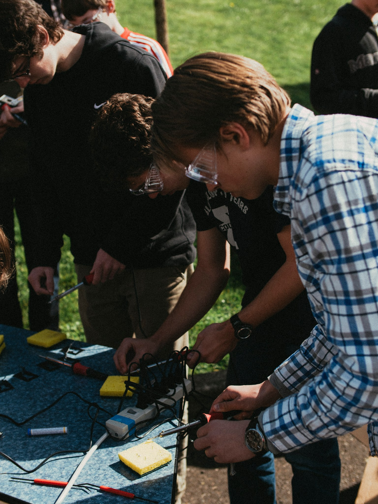

Blog Post: Patricia and Lucas
Lucas and I are officially 6 weeks into our third and final XV experience. It’s been amazing to see the class grow and change, both in the two years we’ve taught it and in the half-trimester we’ve been working with students on the entirely new concept that is XV: Autonomy.
As with all XV classes, the two of us have been working on the class for much longer than six weeks. We’ve been mapping out XV since June of last year, when we decided on the concept of using several smaller group projects and removing the constraint of exploring a physical environment, which the past two XV projects have been centered on. Despite the numerous requests for ideas such as “creating a volcano at Riverdale,” “building a nuclear reactor,” or “explore what objects Nate Klein can fit in,” we eventually settled on the idea of having teams of students with small budgets propose and build small self-driving cars.
One of the major benefits of shifting the class style to one focused on multiple group projects is that it allows students to customize their experiences to their individual needs and interests while still learning to work in a group. It’s clear that many of the students have greatly enjoyed this very unique opportunity.
So far the students have learned how to work with microcontrollers such as Arduino, learned basic programming concepts, and have had the opportunity to hone or learn soldering skills. After the transition from teams of two or three into their larger, assigned groups of four or five, students practiced their communication and coordination skills and learned to budget and write in-depth professional proposals.

Similarly, XV is always a learning experience for us. In the past we’ve developed similar skills to the ones students are working on this year, such as communication and budgeting. Since XV is immensely detail-oriented, Lucas and I have learned to reiterate even the smallest tasks and ideas to make sure they get done. This year, we are learning more about group management, which encompasses skills ranging from identifying personalities that are likely to work well together to ensuring that each group member will have their voices heard. Additionally, we have had to coordinate our efforts with the school’s administrators much better this year as a result of having significantly more orders, totalling a greater expense in a shorter amount of time.
As our time at Riverdale and subsequently with XV comes to an end, we will be setting up XV for future success. Many of the groups used less than their $700 budget, which has given us a surplus that will help to fund next year’s XV. We’ll be sad to leave XV behind, but we’ll be placing the project in the hands of two very competent rising upperclassmen. We are encouraged to see that there are students that are willing, capable, and excited to take on the task of running future Exploratory Ventures.
For now, though, Lucas and I will continue to teach the 21 students who have joined us in this year’s XV. We hope you’ll enjoy learning all about their endeavors.